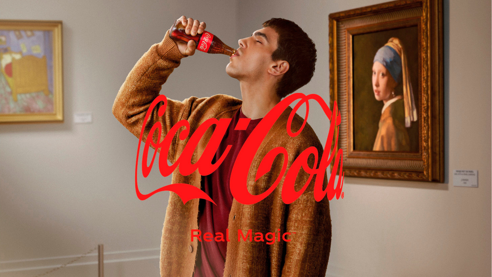
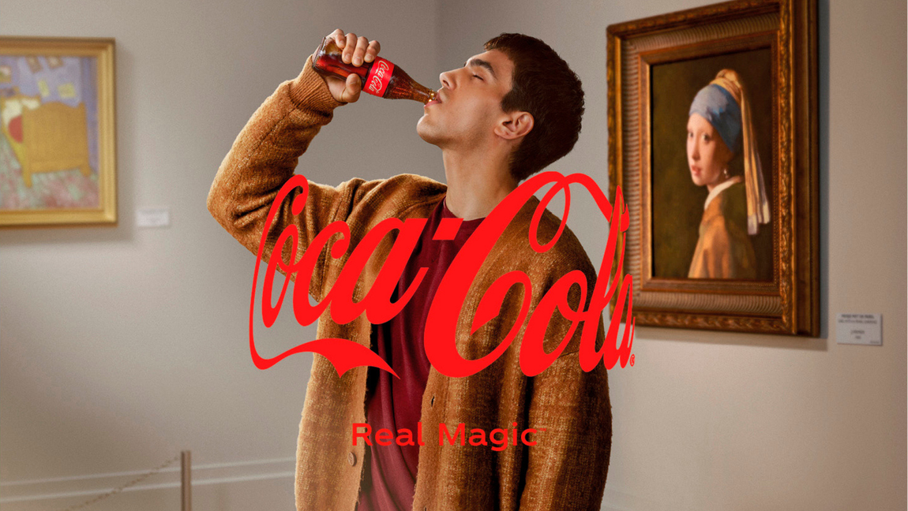
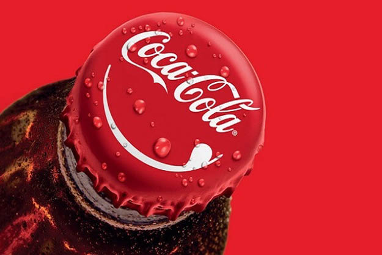
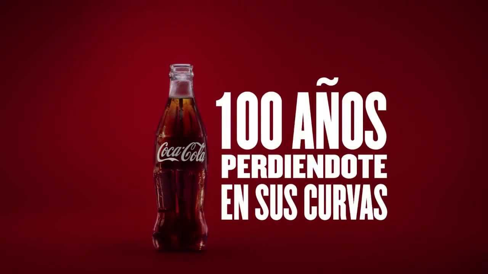

Coca-Cola
Misión:
Refrescar al mundo en cuerpo, mente y espíritu, inspirar momentos de optimismo y felicidad a través de nuestras marcas y acciones,y crear valor y marcar la diferencia.
Refrescar al mundo en cuerpo, mente y espíritu, inspirar momentos de optimismo y felicidad a través de nuestras marcas y acciones,y crear valor y marcar la diferencia.
Nuestra visión es crear las marcas y la selección de bebidas que la gente ama, para refrescarles el cuerpo y el espíritu, y hacerlo de maneras que generen un negocio más sustentable y un mejor futuro compartido que marque una diferencia en la vida de las personas, las comunidades y nuestro planeta.
El 8 de mayo de 1886, el Dr. John Pemberton llevó su jarabe perfeccionado a la farmacia Jacobs en el centro de Atlanta, donde se sirvió el primer vaso de Coca-Cola. Al principio, la Coca-Cola era una bebida nueva y emocionante, ya que durante su primer año se servían aproximadamente nueve bebidas al día.
